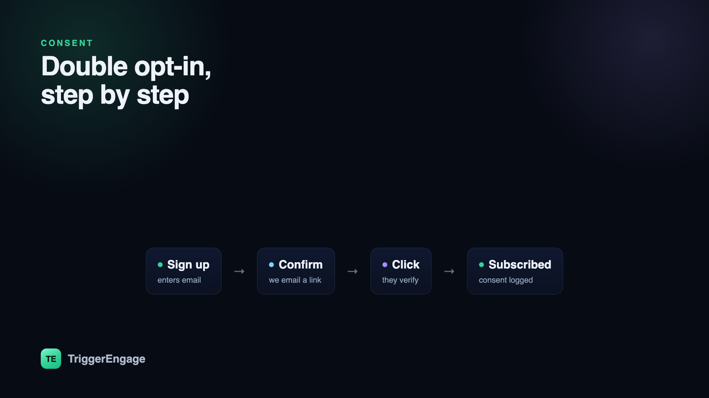

Consent is the foundation every other email metric sits on. Send to people who genuinely asked to hear from you and your open rates, click rates, and deliverability all rise together. Buy a list or subscribe people who never confirmed, and no amount of clever copy will save you from the spam folder. Double opt-in — asking new subscribers to confirm their address before you add them — is the simplest way to build a list of people who actually want your email, and to hold proof that they consented. Here is how it works, when to use it, and how to collect consent that protects both your deliverability and your legal footing.

Single vs double opt-in
With single opt-in, someone enters their email and is subscribed immediately — one step, no confirmation. With double opt-in, that submission triggers a confirmation email; only after they click the link inside are they added to your list. The extra step costs you a few sign-ups from people who never confirm, but it buys three things worth far more: proof the address is real and typo-free, evidence the person genuinely wants your email, and a clean, timestamped record of consent. The subscribers you keep are the ones who will open, click, and rarely complain.
The double opt-in flow, step by step
Mechanically, double opt-in is a short, event-driven sequence — a perfect small example of messaging triggered by behavior rather than a schedule:
- Sign up: the person submits their email through a form. You store it as pending, not subscribed.
- Confirm: you immediately send a confirmation email with a unique, signed verification link. This message is transactional — it is a direct response to their action.
- Click: they open it and click to verify. The link carries a token you validate server-side.
- Subscribed: you mark the address confirmed, log the timestamp and source, and — ideally — send the welcome right away.
Keep the confirmation email ruthlessly simple: one sentence of context and one obvious button. Every distraction lowers the confirmation rate, and confirmation is the whole point of the message.
When to use double opt-in — and when not to
Double opt-in is not always the right call, and treating it as a universal rule costs you sign-ups you should keep. Reach for it when list quality and deliverability matter most: marketing newsletters, promotional lists, any audience in a region with strict consent laws, or any time you have seen spam complaints or bad addresses creep in. Lean toward single opt-in — or skip confirmation entirely — for flows where the person's intent is already unambiguous, such as a product sign-up where email is core to the service, or purely transactional messages like receipts and password resets, which respond to the user's own action and do not require marketing consent at all.
Consent and the law, briefly
This is not legal advice, but the shape of the rules is worth knowing. Under GDPR (EU/UK), consent must be freely given, specific, informed, and unambiguous — and you must be able to prove it. Double opt-in does not just satisfy that; it produces the evidence almost for free, in the form of a timestamped confirmation click. Under the US CAN-SPAM act, the bar is different: prior consent is not strictly required for commercial email, but you must identify yourself honestly, avoid deceptive subject lines, and honor unsubscribe requests promptly. Wherever you operate, three habits keep you on the right side of both the rules and your subscribers: record when and how consent was given, make unsubscribing one easy click, and never repurpose a transactional channel to sneak in marketing.
| Single opt-in | Double opt-in | |
|---|---|---|
| Steps to subscribe | One | Two (submit + confirm) |
| List size | Larger, noisier | Smaller, cleaner |
| Deliverability | More risk | Stronger reputation |
| Proof of consent | Weak | Clear, timestamped |
| Best for | Core product sign-ups | Marketing lists, strict regions |
Consent protects everything downstream
It is tempting to treat consent as a compliance chore, but it is really a growth lever. A list built on genuine permission complains less, which protects your sender reputation, which keeps you in the inbox, which lifts every open and click that follows. Clean consent also makes your automated programs sharper: when you know someone truly opted in, your drip campaigns and lifecycle flows land on receptive people instead of burning reputation on the indifferent. Getting permission right at the front door is the cheapest performance improvement in all of email.